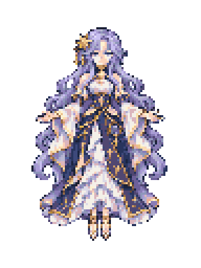
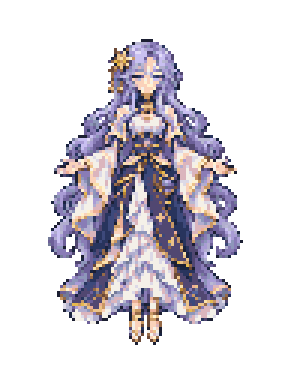
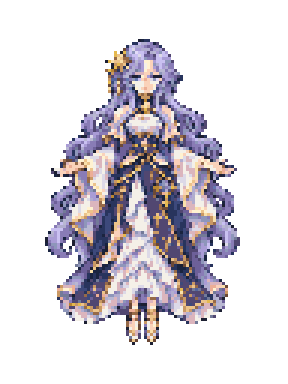
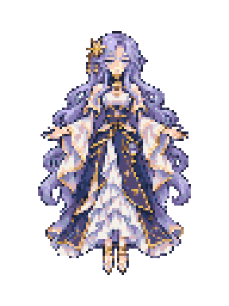
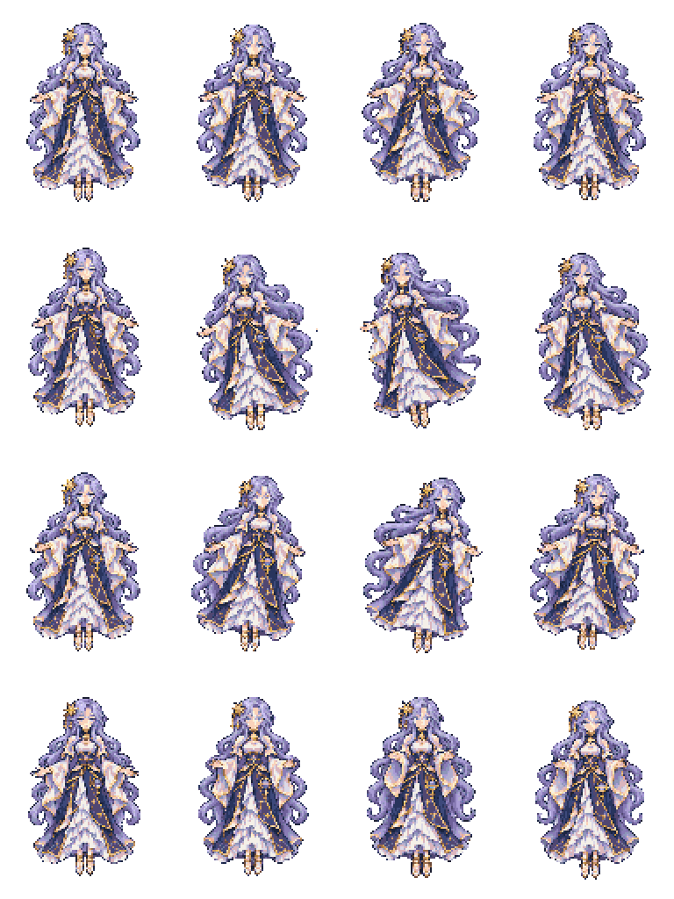

星环观测者 · 原生素材 v1
已接入第一关的16帧主体、前后星仪与同角色头像。此页为素材预览；实际弹幕效果请打开工作区output中的Boss美术v1离线试玩，或进入“首领练习”。
后续说明：本页保留素材v1的原始动作帧，当前演出版使用稳定站姿与连续轻倾，不再快速轮播原移动循环。实际表现请查看output中的danmaku-stage01-show-v1-offline.html。




主体原生96×128，锚点(48,48)；主体与星仪共用32色及二值透明。下图为全部帧2倍静态预览，旧立绘／首稿保留。生产清单 · 实际提示词
